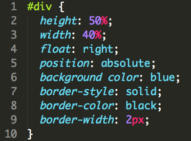
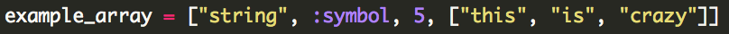
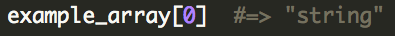
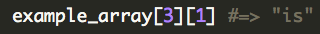
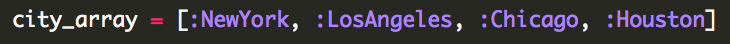
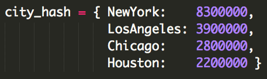
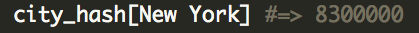

Meta-DBC:
A New Look at Pedagogy
September 18, 2014
I've said it before and I will say it again and again: I believe wholeheartedly that the firmly ensconced system of education in the United States, particularly higher education, is an antiquated system that, although it has evolved some over the years, has not evolved at the same rate that society has. These differing rates of change have led to a disconnect between academia and the real world. Dev Bootcamp promises to bridge that gap and be a new, fresh, completely revolutionary form of education that is at the vanguard of pedagogy. With an emphasis on emotional intelligence and people skills, DBC's curriculum might have traditional thinkers raising their eyebrows. Indeed, learning how to code is only one piece of the puzzle of what it means to be a DBC student. As it should be. Having left academia disenchanted with the passive learning environment it created, I am hungry for the new, active, get-your-hands-dirty environment DBC will provide. It's been such a wonderful thing to realize that being a programmer takes a lot more emotional and interpersonal skills than it does raw analytical skills, and that all these skills *can* be cultivated; I'd always thought that coding was entirely analytical and that I'd have no chance because I've always been more of a people person.
Having gone through merely a week of the Phase 0 curriculum, I can say that I am left even more eager to become an integral part of this learning environment, that, as Shereef mentioned in his fireside chat, will be an act of co-creation. Yes, I will come to day one of Phase 1 with a healthy dose of nervousness, as it is a bold, completely novel, experimental experience. But I'll take risky and adventurous over safe and boring *any* day, and that's exactly why I'm here at DBC.
git, GitHub, & Version Control:
Programmers' Godsend
September 18, 2014
Version control in computer programming has many benefits. For one, it basically allows the programmer to "go back in time" in that various versions of the project are saved throughout a period of time. If the programmer works on the project, but accidentally adds a bug in committing those changes, they can go back to the version of that code *before* they made that mistake, rather than trying to figure out how it was before. This saves a lot of time, panic, and effort! Version control is also essential in collaborative projects, where there is more than one programmer working on a code base. It allows the programmers to each have their own copy of the code base, and make changes to that personal copy (and test those changes to make sure they work/don't add a bug) before adding it to the master copy.
Git is software that makes version control easy. It runs in the background of any directory you decide to initialize with git. It
-notices if you have made any changes to that directory, whether it be adding files or editing files,
-knows exactly what those changes are, and can show you them, and
-allows you to save ("commit") those changes along with a small message where you describe what changes you have made. Git then keeps a log of your commits (changes), and you can go back and see the code as it was before and after the various changes you made.
GitHub is another useful tool for programmers, especially for teams of developers. Storing your code on GitHub allows you to collaborate with people remotely, so you can theoretically work on a project with a remote team all around the world, so long as they have Internet access. While git lives locally on your computer, and is therefore useful for working on your local disk, GitHub lives on the cloud, and works in tandem with git to push your code on to GitHub, enabling other team members to see your code, and enabling *you* to make changes to the master copy of the project. GitHub also provides peace of mind, knowing that your code is stored on a remote and very reliable server; it basically acts as a backup of your code.
CSS Subtleties:
Margin, Padding, & Border
September 28, 2014
After having immersed myself in the world of HTML and CSS through creating a fully functional website in a mere 36 hours, I came out of it with a great deal of knowledge (although admittedly an equally great deal of questions) about front-end web development and design. Today I will do my best to explain one such piece of knowledge of which I feel I have a pretty clear understanding: the difference between margins, padding, and borders. To understand these topics at all, I need to first explain the fundamental structure of almost all websites. When you load a website, you immediately notice that its content is organized in a certain way. You may have a header bar, one or several content areas, a navigation bar, a footer, etc. There is always a lot of thought (or there at least should be!) that goes into this design. When writing the code for the website, what allows the programmer to tell which material to go where? Well, odds are, the tool s/he used was the div. A div, which derives from the word "divide" is a part of the web page that you section off. Making divs is really easy in the HTML file (the content and framework part of the site), but the challenging part is bringing them to "life" using CSS (cascading style sheets). When you create a div in the HTML, it exists, but it has no idea where to go on the web page, so you give it instructions by using CSS properties like so:

Now, what's the difference between padding, margins, and borders? First, let me explain padding and margins, as they are the most closely-related and confusable of the three. The margin of a div determines how much space the div has relative to other divs and the confines of the web page. If you set a div with all four margins set to 0, it will exist flush against other divs or the edges of the web page. There will be no breathing room. So the margin determines the space outside of the div itself relative to other elements of the web page.
The padding, on the other hand, is more inward-looking. It determines how close the div's content can get to the div's end. If you set all four sides to padding 0, the content will extend right up flush against the outer walls of the div. If you give the content more padding, it will stay away from the outer walls. You can compare the margin vs. padding issue to government, as margin is like foreign policy (how divs interact with the outside world), and padding is like domestic policy (how divs treat what's inside of them).
Finally, the border is simply that: the outermost part of the div. The border doesn't really determine anything about the div's relationship with other divs (margin) or its own inner content (padding). Rather, it is an almost purely stylistic feature. You can style the border in many ways, from a simple black solid line, to a dotted line, to even 3-D designs. Borders adds some character to the website and help compartmentalize the content. The one trick with the border is that if you make very large borders, they actually protrude outside of the div's territory (imagine an extremely thick border fence around a country that cuts into its neighboring country's territory). The programmer has to watch out for this, and sometimes has to compensate for large borders by changing around margins so that the border doesn't interfere with other content. Other than this case, borders don't really influence relationships between divs, and certainly not relationships between divs and their content.
So there you have it! I hope I helped clarify some confusion regarding these topics!
Arrays & Hashes:
One is Silver and the Other Gold
September 30, 2014
Now almost a third of the way through Phase 0 of Dev Bootcamp, we've finally moved on from git, HTML, and CSS to the true heart and soul of programming: scripting -- the part that actually makes your web site do stuff rather than just display it. For the first blog topic, we'll discuss arrays and hashes, which are two ways of storing data. Arrays and hashes are each their own classes in the Ruby programming language (the one we'll focus on at DBC), meaning they come with their own set of rules that govern how they can be used, and methods than can manipulate the data within them. First let's talk about arrays, since they're simpler, and understanding hashes is easier once you understand arrays.
An array is a series of elements grouped and stored together, separated by commas. They are encapsulated by a pair of brackets on both ends of the series of elements. The elements can be of various types, including strings, numbers, symbols, etc, such as the example below illustrates.

Yes, you actually can store an array inside of an array! In addition to the element itself, the array knows where the element is in the array, something called the array index. The index begins at zero, so the first element of the array can be called like so:

How would you call the second element of the array within the parent array?

Good. Now that we have an understanding of arrays, we can delve into the world of hashes. Hashes are similar to arrays in that they are also a means of storing a series of elements, but they don't just stop there. Hashes store relationships between its elements in what are called key-value pairs. Whereas an array could store a list of cities:

the hash could store them AND tell you their populations (or whatever corresponding piece of data):

where the city names are the "keys" and the populations are the "values". You can access a key's corresponding value like so:

As you can see, hashes allow for relationships between values, in comparison with arrays which just list them in a series. Both are incredibly useful and are fundamental to just about any large-scale project.